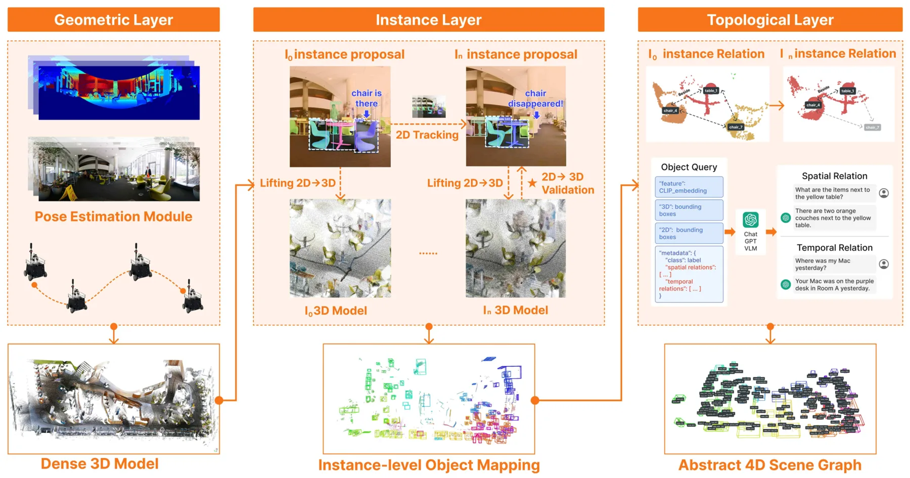
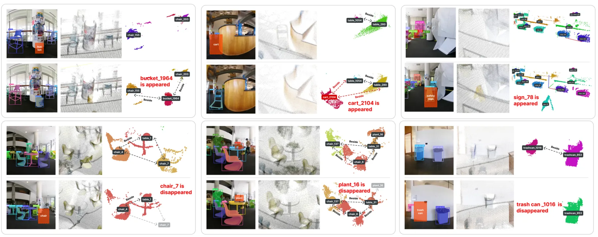
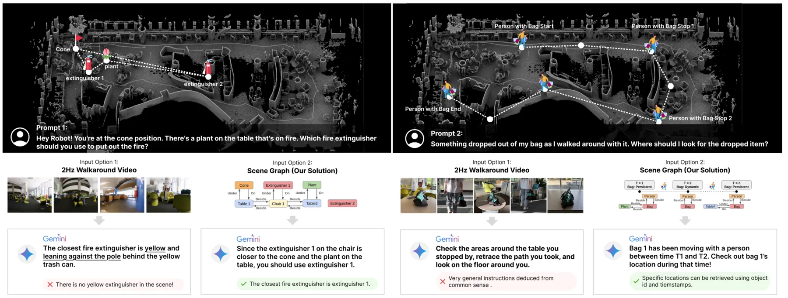
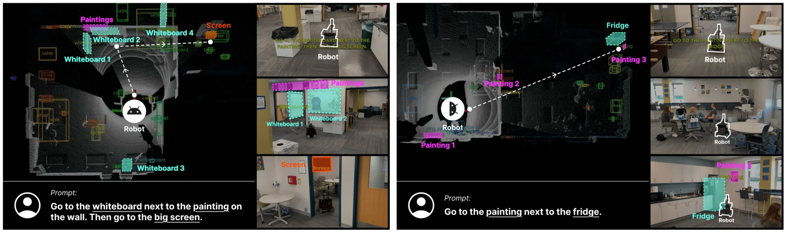
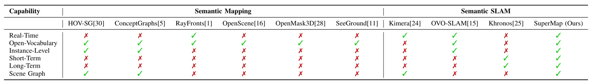
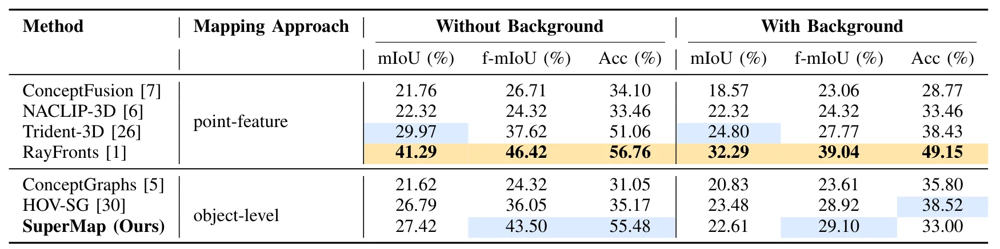
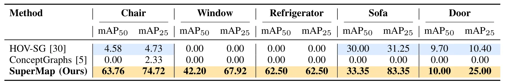
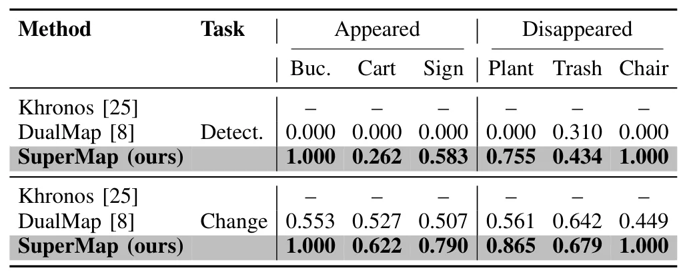
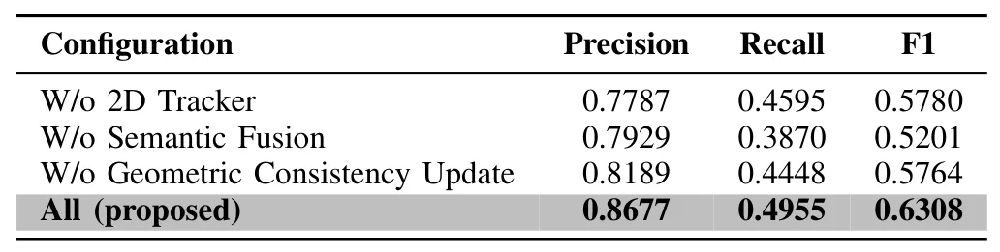

SuperMap：面向视觉语言导航的时空 SLAM 系统
SuperMap: A Spatio-Temporal SLAM System for Visual-Language Navigation
这是一条从可靠位姿与稠密几何到对象级时空记忆、再到 VLM 导航的完整桥接链路。论文同时给出了在线频率、实例变化召回和模块消融，适合作为空间推理前的地图接口基线。

动机与问题Motivation
动机与问题
开放词汇检测通常是间歇且视角相关的，直接写入地图会造成身份漂移和过期语义。论文要解决的是如何把高频位姿/深度几何、低频重型语义感知和长期对象变化统一到一个可运行的在线表示中。
方法Method
方法总览
系统由在线 3D 重建、时空实例更新和时空场景图三层组成，传感器输入为 RGB、深度或 LiDAR 与 IMU。2D 检测和分割先产生候选，3D 投影与运动补偿用于关联，几何一致性和 Bayesian 语义融合决定保留、更新或删除地图内容，最后由场景图提供 VLN 接口。
关键技术细节
实例轨迹状态包含图像质心、框尺度和图像速度，预测质心由历史 3D 中心经当前位姿投影得到，并作为 Kalman Filter 先验。地图更新把投影深度残差建模为随机量，语义标签用类别后验递推；图结构同时保存空间边与时间边，并以实例 ID、标签和 3D 中心序列化给 VLM。

实验Experiments
实验设置
语义质量实验在 ScanNet 上比较 ConceptFusion、NACLIP-3D、Trident-3D、RayFronts、ConceptGraphs 与 HOV-SG，报告 class-level mIoU、f-mIoU、Acc 以及 instance-level mAP。时空实验使用 30 m×20 m 室内区域的 10 分钟真实轨迹，移除 3 个物体并加入 3 个物体；运行硬件为 i9-14900H、RTX 4090 Laptop 16 GB，另报告 41 个标注对象的消融和在线频率。
实验数字与比较
ScanNet 无背景 class-level 结果中，SuperMap 的 Acc 为 55.48%、f-mIoU 为 43.50%，RayFronts 的 Acc 为 56.76%、f-mIoU 为 46.42%；instance-level 的 Chair AP50/AP25 为 63.76/74.72%，Window 为 42.20/67.92%。6 个变化对象的检测召回分别为 Bucket 1.000、Cart 0.262、Sign 0.583、Plant 0.755、Trash 0.434、Chair 1.000，变化检测召回分别为 1.000、0.622、0.790、0.865、0.679、1.000；全系统在 41 对象消融中 Precision/Recall/F1 为 0.8677/0.4955/0.6308。
消融/失败边界
去掉 2D Tracker 后 F1 从 0.6308 降到 0.5780，去掉 Semantic Fusion 后降到 0.5201，去掉 Geometric Consistency Update 后降到 0.5764；这表明身份连续性、语义后验和几何过滤分别提供互补收益。作者指出高速动态物体跟踪仍有限，且当前开放词汇检测依赖预定义 prompt；10 分钟变化实验与 1 Hz 分割频率也不能覆盖快速动态和真正开放世界。
局限与迁移Limitations & Transfer
局限与待核验
作者明确承认高度动态对象的时间一致性不足，并计划引入更强的 tracking-by-detection 或自动 open-world prompting。待核验项包括真实导航成功率与 VLM 原始视频对照的完整数字、不同 LiDAR/相机同步误差下的鲁棒性、显存功耗，以及大规模长期地图的内存增长。
与你研究路线的关系
最可迁移的是“几何状态先验 + 3D 到 2D 运动补偿 + 概率语义更新 + 4D 场景图”的接口，可把 pose covariance、地图时间戳和对象存在概率显式传给空间推理模块。下一步应在动态障碍、传感器 dropout 和错误 prompt 下做端到端测试，按重定位率、实例 ID switch、变化检测召回、导航成功率和恢复时间共同评估。
{kind=link}

{kind=link}

{kind=link}

{kind=link}

{kind=link}

{kind=link}

{kind=link}

{kind=link}
